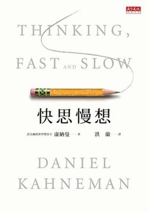

📖诺贝尔经济学奖得主丹尼尔·卡尼曼毕生研究的结晶，揭示了人类思维的两个系统：快速、直觉、自动的系统一，与缓慢、理性、需要努力的系统二。
书中详细阐述了两系统如何协作与冲突，以及由此产生的各种认知偏误：锚定效应、可得性启发、前景理论等。这些发现深刻影响了经济学、心理学、管理学等多个领域。
这是我读过的影响最深远的心理学著作。卡尼曼用数十年的研究积累，系统地揭示了人类思维的运作机制与局限性。
系统一与系统二的框架简洁而强大。我们日常的大多数决策都由系统一主导——快速、自动、不费力气。但系统一充满偏见：它会过度自信、会被锚定、会忽视基础概率。系统二虽然理性，却懒惰且容易被系统一绑架。
最让我震撼的是前景理论。传统经济学假设人是理性的，但卡尼曼用实验证明：人类对损失的厌恶远大于对同等收益的喜爱。这解释了为什么我们宁可错过机会也不愿承担风险，为什么人们会为了挽回损失而投入更多。
这本书不仅是心理学经典，更是自我认知的工具。了解自己的思维缺陷，才能在关键时刻启动系统二，做出更理性的决策。但正如卡尼曼所说，知道偏见并不意味着能避免偏见——认知偏误是人类思维的出厂设置，我们能做的只是减少它的影响。